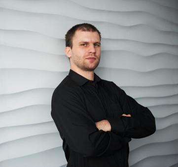

Born in 1984 r. in Warsaw.
Graduated from Stanisław Staszic high school in Warsaw, in 2004.
Received his M. Sc. in Information Systems Engineering, in 2008 and Ph.D. in Control and Computation, in 2015 (thesis title: "State abstraction in Reinforcement Learning") from the Faculty of Electronics and Information Technology at the Warsaw University of Technology.
Currently works as a software architect at Transition Technologies S.A.